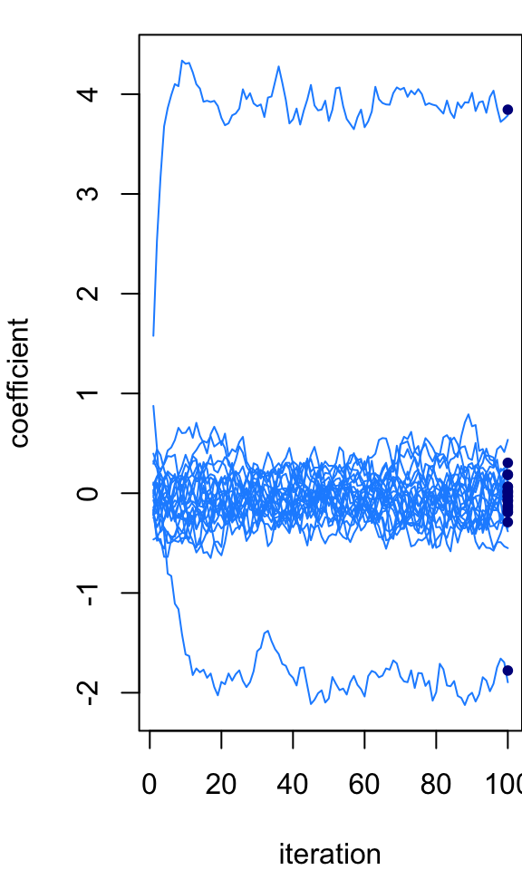
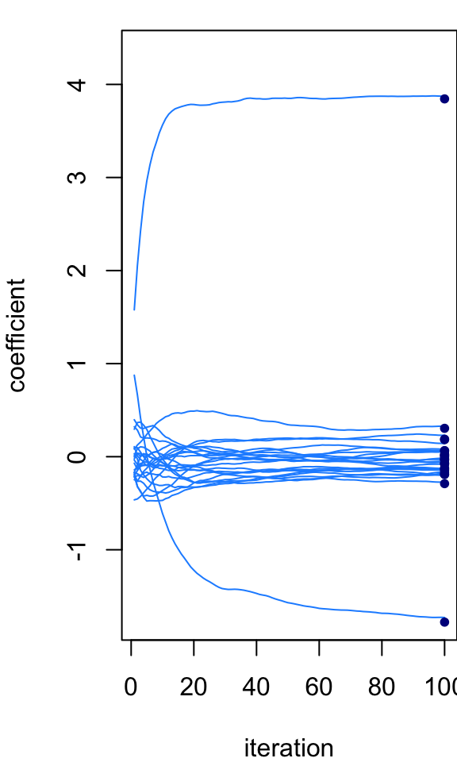
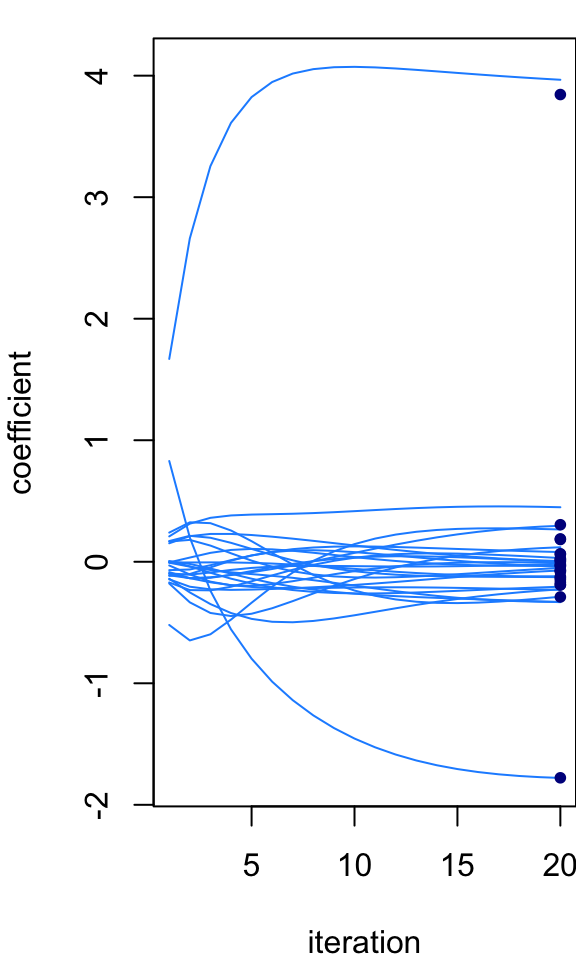

Last updated: 2025-03-06
Checks: 5 2
Knit directory: fiveMinuteStats/analysis/
This reproducible R Markdown analysis was created with workflowr (version 1.7.1). The Checks tab describes the reproducibility checks that were applied when the results were created. The Past versions tab lists the development history.
The R Markdown file has unstaged changes. To know which version of
the R Markdown file created these results, you’ll want to first commit
it to the Git repo. If you’re still working on the analysis, you can
ignore this warning. When you’re finished, you can run
wflow_publish to commit the R Markdown file and build the
HTML.
The global environment had objects present when the code in the R
Markdown file was run. These objects can affect the analysis in your R
Markdown file in unknown ways. For reproduciblity it’s best to always
run the code in an empty environment. Use wflow_publish or
wflow_build to ensure that the code is always run in an
empty environment.
The following objects were defined in the global environment when these results were created:
| Name | Class | Size |
|---|---|---|
| B | matrix;array | 4 Kb |
| n | numeric | 56 bytes |
| niter | numeric | 56 bytes |
| p | numeric | 56 bytes |
| plot_params_over_time | function | 79.5 Kb |
| post | list | 832 bytes |
| r | numeric | 56 bytes |
| ridge_gs | function | 124 Kb |
| ridge_iterative | function | 100.8 Kb |
| ridge_post | function | 13.8 Kb |
| ridge_post1 | function | 33.1 Kb |
| s | numeric | 56 bytes |
| s0 | numeric | 56 bytes |
| sim | list | 17.2 Kb |
| sim_ridge_data | function | 71.4 Kb |
| X | matrix;array | 15.7 Kb |
| y | numeric | 856 bytes |
The command set.seed(12345) was run prior to running the
code in the R Markdown file. Setting a seed ensures that any results
that rely on randomness, e.g. subsampling or permutations, are
reproducible.
Great job! Recording the operating system, R version, and package versions is critical for reproducibility.
Nice! There were no cached chunks for this analysis, so you can be confident that you successfully produced the results during this run.
Great job! Using relative paths to the files within your workflowr project makes it easier to run your code on other machines.
Great! You are using Git for version control. Tracking code development and connecting the code version to the results is critical for reproducibility.
The results in this page were generated with repository version 6511328. See the Past versions tab to see a history of the changes made to the R Markdown and HTML files.
Note that you need to be careful to ensure that all relevant files for
the analysis have been committed to Git prior to generating the results
(you can use wflow_publish or
wflow_git_commit). workflowr only checks the R Markdown
file, but you know if there are other scripts or data files that it
depends on. Below is the status of the Git repository when the results
were generated:
Ignored files:
Ignored: analysis/figure/
Unstaged changes:
Modified: analysis/variational_inference.Rmd
Note that any generated files, e.g. HTML, png, CSS, etc., are not included in this status report because it is ok for generated content to have uncommitted changes.
These are the previous versions of the repository in which changes were
made to the R Markdown (analysis/variational_inference.Rmd)
and HTML (docs/variational_inference.html) files. If you’ve
configured a remote Git repository (see ?wflow_git_remote),
click on the hyperlinks in the table below to view the files as they
were in that past version.
| File | Version | Author | Date | Message |
|---|---|---|---|---|
| Rmd | 6511328 | Peter Carbonetto | 2025-03-06 | Added CAVI updates. |
| Rmd | 4f311ff | Peter Carbonetto | 2025-03-05 | Revised some of the initial parts of the variational inference vignette. |
| Rmd | 2ef9b10 | Peter Carbonetto | 2025-03-05 | Added link to the variational inference vignette. |
| Rmd | 58b62f0 | Peter Carbonetto | 2025-03-05 | A few edits to the variational inference code. |
| Rmd | d1311c6 | Peter Carbonetto | 2025-03-05 | Implemented ridge_coord_ascent() function for the variational inference vignette. |
| Rmd | 283a037 | Peter Carbonetto | 2025-03-05 | Added code to perform Gibbs sampling in the variational inference vignette. |
| Rmd | c97d875 | Peter Carbonetto | 2025-03-05 | Implemented function ridge_post() for the variational inference vignette. |
| Rmd | 0e04740 | Peter Carbonetto | 2025-03-05 | Defined X. |
| Rmd | b46d160 | Peter Carbonetto | 2025-03-05 | A few edits to the ridge regression model. |
| Rmd | 7174694 | Peter Carbonetto | 2025-03-05 | Added a few more rough details about the ridge regression model. |
| Rmd | 4896369 | Peter Carbonetto | 2025-03-05 | Added some details about the ridge regression model to the variational_inference vignette. |
| html | 19190b0 | Peter Carbonetto | 2025-03-05 | First build of the variational inference vignette. |
| Rmd | 1352fc2 | Peter Carbonetto | 2025-03-05 | workflowr::wflow_publish("variational_inference.Rmd", verbose = TRUE) |
| Rmd | e1a2bea | Peter Carbonetto | 2025-03-05 | workflowr::wflow_publish("index.Rmd") |
MCMC sampling (and specifically Gibbs sampling) will be used to illustrate some of the key ideas so you should be familiar with those.
Properties of multivariate Gaussians.
It is helpful if you are familiar with ridge regression, but this isn’t essential since we will (re)introduce it here. See for example Ryan Tibshirani’s class notes.
*Add introduction here. Talk about this idea of solving a high-dimensional/large-scale inference problem.”
We will use the ridge regression model as our running example to illustrate the use of variational inference to perform posterior inferences. Although variational inference methods aren’t really needed because the math works out very well for this model, its convenient mathematical properties will be helpful for understanding the variational approximations since we can compare the approximations to the exact calculations. Ridge regression is also an example of a high-dimensional inference problem where variational inference ideas might be useful.
Although you may have seen ridge regression elsewhere, it hasn’t been introduced in any of the fiveMinuteStats vignettes, so we briefly introduce it here.
There are different ways to introduce ridge regression. Here, we introduce it as a Bayesian model; that is, we define a likelihood and a prior, and we perform posterior inferences with respect to this likelihood and prior.
The starting point is standard multiple linear regression model: \[ y_i \sim N(\mathbf{x}_i^T\mathbf{b}, \sigma^2), \quad i = 1, \ldots, n. \] Here, \(i\) indexes a sample, and the data for sample \(i\) are the output \(y_i \in \mathbf{R}\) and the \(p\) inputs \(x_{i1}, \ldots, x_{ip}\) stored as a vector \(\mathbf{x}_i \in \mathbf{R}^p\). Typically, one also includes an intercept term, but we ignore this detail here for simplicity (noting that it isn’t hard to add and intercept without fundamentally changing the model). The main quantities of interest are the coefficients \(b_1, \ldots, b_p\), which are stored as a vector, \(\mathbf{b} \in \mathbf{R}^p\). This defines the likelihood.
Next we introduce the prior, which is that each of the coefficients is normal with a mean of zero: \[ b_j \sim N(0, \sigma_0^2). \] Here we have assumed for simplicity a single variance parameter, \(\sigma^2\), that is shared by all the coefficients.
Skipping the derivations so that we can get more quickly to the main topic of interest, we note an important property of this model: the posterior distribution of \(\mathbf{b}\) is a multivariate normal with a mean \(\bar{\mathbf{b}}\) and a covariance \(\mathbf{V}\) as follows: \[ \bar{\mathbf{b}} = \mathbf{V} \mathbf{X}^T\mathbf{y}/\sigma^2 \quad \mathrm{and} \quad \mathbf{V} = \sigma^2(\mathbf{X}^T\mathbf{X} + \lambda \mathbf{I})^{-1}, \] such that \(\lambda = \sigma^2/\sigma_0^2\), \(\mathbf{I}\) is the \(p \times p\) identity matrix, and \(\mathbf{X}\) is the “input matrix”, that is, the \(n \times p\) matrix formed by filling in each row \(i\) with the vector \(\mathbf{x}_i\). (Note that because the posterior is multivariate normal, the posterior mean is also the posterior mode.)
Since the posterior distribution is multivariate normal with analytic expressions for the posterior mean and posterior covariance, this is a case where Bayesian computational techniques such as MCMC or variational inference are not strictly needed. However, if we are interested in analyzing a large data set—large \(n\) and/or large \(p\)—the computations could be a problem. For example, consider the effort involved in computing the matrix product \(\mathbf{X}^T \mathbf{X}\) and the matrix inverse that appears in the expression for \(\mathbf{V}\). So actually these techniques could be useful even if on paper the posterior distribution is straightforward.
As our first attempt at grappling with the challenges of inference in high dimensions, let’s consider a simple Gibbs sampler which involves repeatedly choosing a dimension \(j\) and randomly sampling from the posterior distribution of \(b_j\) conditioned on all the other coefficients: \[ b_j \sim N(\mu_j, v_j^2), \] where \[ v_j = \bigg(\frac{\mathbf{x}_j^T\mathbf{x}_j}{s^2} + \frac{1}{s_0^2}\bigg)^{-1}, \qquad \mu_j = \frac{v_j}{s^2} \times \bigg(\mathbf{x}_j^T\mathbf{y} - \sum_{k \,\neq\, j} \mathbf{x}_j^T\mathbf{x}_k b_k \bigg). \]
Discuss the computational complexity of the Gibbs sampler updates for ridge regression and compare to the computational complexity of the analytical posterior computations above.
Let’s implement this Gibbs sampler and test it out on a moderately large inference problem to gain some intuition for it, then we will draw comparisons to the variational inference solution.
Load the MASS package:
library(MASS)And set the seed to ensure the results are reproducible.
set.seed(3)We will use this function to simulate some data from a ridge regression model:
# Simulate n data points from a ridge regression model with p inputs.
# Other parameters: p1, the number of nonzero coefficients to simulate
# (should not be greater than p); s, the residual standard deviation
# (s.d.); s0, the prior s.d. used to simulate the nonzero
# coefficients; and r, the correlation among the inputs.
sim_ridge_data <- function (n, p, p1, s, s0, r) {
R <- matrix(r,p,p)
diag(R) <- 1
X <- mvrnorm(n,rep(0,p),R)
X <- scale(X,center = TRUE,scale = FALSE)
b <- rep(0,p)
b[1:p1] <- rnorm(p1,sd = s0)
y <- X %*% b + rnorm(n,sd = s)
y <- drop(scale(y,center = TRUE,scale = FALSE))
return(list(X = X,y = y,b = b))
}Now simulate 80 data points from a ridge regression model with 24 inputs in which all but the first two inputs have coefficients of zero. The 24 input variables are all quite strongly correlated with each other (correlation of 0.8):
n <- 80
p <- 24
s <- 0.6
s0 <- 3
r <- 0.8
sim <- sim_ridge_data(n,p,2,s,s0,r)
X <- sim$X
y <- sim$yThis next bit of code defines a few functions used to implement the Gibbs sampler, visualize the state of the Markov chain over time, and compare to the analytical posterior distribution.
# Perform "niter" Gibbs sampling updates for each input variable in
# the ridge regression model with data X, y. The Markov chain is
# initialized to "b".
ridge_gs <- function (X, y, s, s0, niter, b = rep(0,ncol(X))) {
p <- length(b)
B <- matrix(0,p,niter)
XX <- crossprod(X)
xy <- drop(crossprod(X,y))
for (i in 1:niter) {
for (j in 1:p) {
v <- 1/(XX[j,j]/s^2 + 1/s0^2)
mu <- v * (xy[j] - sum(XX[j,-j]*b[-j]))/s^2
b[j] <- rnorm(1,mu,sqrt(v))
}
B[,i] <- b
}
return(B)
}
# Return the posterior distribution for the ridge regression model
# given data X, y.
ridge_post <- function (X, y, s, s0) {
p <- ncol(X)
lambda <- (s/s0)^2
V <- s^2 * solve(crossprod(X) + lambda*diag(p))
b <- drop(V %*% crossprod(X,y)/s^2)
return(list(mean = b,var = diag(V)))
}
# This function is used to view how the parameter estimates change
# over time in the running of an inference algorithm (e.g.,
# MCMC). Input B is a p x niter matrix where p is the number of
# parameters and niter is the number of iterations performed.
# When show_average = TRUE, a running average is shown instead of
# the actual values in the B matrix.
plot_params_over_time <- function (B, show_average = FALSE) {
p <- nrow(B)
niter <- ncol(B)
if (show_average)
B[1,] <- cumsum(B[1,])/1:niter
plot(1:niter,B[1,],type = "l",lwd = 1,col = "dodgerblue",
ylim = range(B),xlab = "iteration",ylab = "coefficient")
for (j in 2:p) {
if (show_average)
B[j,] <- cumsum(B[j,])/1:niter
lines(1:niter,B[j,],lwd = 1,col = "dodgerblue")
}
}Run the Gibbs sampler for 100 iterations:
niter <- 100
B <- ridge_gs(X,y,s,s0,niter)Let’s now plot the state of the Markov chain, and let’s compare the final state of the Markov chain to the exact posterior mean (the black dots in the plot):
par(mar = c(4,4,1,0))
plot_params_over_time(B)
post <- ridge_post(X,y,s,s0)
points(rep(niter,p),post$mean,pch = 20,col = "darkblue",cex = 1)
At the last iteration, the Markov chain is quite close to the posterior mean but we wouldn’t expect it to be exactly the same because the MCMC is intended to simulate the full posterior distribution, not just recover the posterior mean. If we instead take the average of the states then we should get closer to the exact calculations. This next plot shows the running average across the 100 iterations of the Gibbs sampler:
par(mar = c(4,4,1,0))
plot_params_over_time(B,show_average = TRUE)
points(rep(niter,p),post$mean,pch = 20,col = "darkblue",cex = 1)
Let’s now consider a different iterative algorithm: like the Gibbs sampler, it updates one co-ordinate at a time; unlike the Gibbs samppler, the updates are deterministic (not stochastic). Here we will simply describe the updates and later we will motivate these updates as fitting a variational approxiation to the (exact) posterior distribution.
To describe the updates, it is helpful to first write down the posterior distribution for a ridge regression model with a single input, which is a special case of the expressions given above: \[ \bar{b} = v \mathbf{x}^T\mathbf{y}/\sigma^2, \qquad v = \sigma^2(\mathbf{x}^T\mathbf{x} + \lambda)^{-1}. \] For describing the updates, it will be convenient to define these expressions as functions of the data, so let’s change the notation slightly: \[ \bar{b}(\mathbf{x},\mathbf{y}) = v(\mathbf{x}, \mathbf{y}) \times \mathbf{x}^T\mathbf{y}/\sigma^2, \qquad v(\mathbf{x},\mathbf{y}) = \sigma^2(\mathbf{x}^T\mathbf{x} + \lambda)^{-1}. \]
With these expressions, the coordinatewise updates are very simple to describe: \[ \mathbf{r}_j \leftarrow \mathbf{y} - \sum_{k\, \neq\, j} \mathbf{x}_k b_k, \qquad b_j \leftarrow \bar{b}(\mathbf{x}_j, \mathbf{r}_j) \]
These next two functions implement an iterative algorithm that cycles through \(p\) of these updates for each of the \(p\) input variables:
# Return the posterior distribution for the single-input
# ridge regression model given data x, y.
ridge_post1 <- function (x, y, s, s0) {
xx <- sum(x^2)
xy <- sum(x*y)
v <- s^2/(xx + (s/s0)^2)
b <- v*xy/s^2
return(list(mean = b,var = v))
}
# Perform "niter" updates of the iterative algorithm for ridge
# regression, initialized to "b".
ridge_iterative <- function (X, y, s, s0, niter, b = rep(0,ncol(X))) {
p <- length(b)
B <- matrix(0,p,niter)
for (i in 1:niter) {
r <- drop(y - X %*% b)
for (j in 1:p) {
x <- X[,j]
r <- r + x*b[j]
b[j] <- ridge_post1(x,r,s,s0)$mean
r <- r - x*b[j]
}
B[,i] <- b
}
return(B)
}ADD TEXT HERE.
par(mar = c(4,4,1,0))
niter <- 20
B <- ridge_iterative(X,y,s,s0,niter)
plot_params_over_time(B)
points(rep(niter,p),post$mean,pch = 20,col = "darkblue",cex = 1)
ADD SOME OBSERVATIONS
TO DO: Try running for longer. What happens when we use a different starting point?
TO DO: Discuss computational complexity of this algorithm compard to the Gibbs sampler and the analytical posterior.
Blei et al, Variational inference: a review for statisticians.
For a statistical physics perspective, see Yedidia et al, Constructing free-energy approximations and generalized belief propagation algorithms.
sessionInfo()R version 4.3.3 (2024-02-29)
Platform: aarch64-apple-darwin20 (64-bit)
Running under: macOS Sonoma 14.7.1
Matrix products: default
BLAS: /Library/Frameworks/R.framework/Versions/4.3-arm64/Resources/lib/libRblas.0.dylib
LAPACK: /Library/Frameworks/R.framework/Versions/4.3-arm64/Resources/lib/libRlapack.dylib; LAPACK version 3.11.0
locale:
[1] en_US.UTF-8/en_US.UTF-8/en_US.UTF-8/C/en_US.UTF-8/en_US.UTF-8
time zone: America/Chicago
tzcode source: internal
attached base packages:
[1] stats graphics grDevices utils datasets methods base
other attached packages:
[1] MASS_7.3-60.0.1 workflowr_1.7.1
loaded via a namespace (and not attached):
[1] jsonlite_1.8.8 highr_0.10 compiler_4.3.3 promises_1.2.1
[5] Rcpp_1.0.12 stringr_1.5.1 git2r_0.33.0 callr_3.7.5
[9] later_1.3.2 jquerylib_0.1.4 yaml_2.3.8 fastmap_1.1.1
[13] R6_2.5.1 knitr_1.45 tibble_3.2.1 rprojroot_2.0.4
[17] bslib_0.6.1 pillar_1.9.0 rlang_1.1.5 utf8_1.2.4
[21] cachem_1.0.8 stringi_1.8.3 httpuv_1.6.14 xfun_0.42
[25] getPass_0.2-4 fs_1.6.5 sass_0.4.9 cli_3.6.4
[29] magrittr_2.0.3 ps_1.7.6 digest_0.6.34 processx_3.8.3
[33] fontawesome_0.5.2 rstudioapi_0.15.0 lifecycle_1.0.4 vctrs_0.6.5
[37] evaluate_0.23 glue_1.8.0 whisker_0.4.1 fansi_1.0.6
[41] rmarkdown_2.26 httr_1.4.7 tools_4.3.3 pkgconfig_2.0.3
[45] htmltools_0.5.8.1This site was created with R Markdown